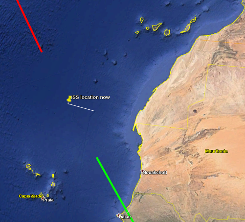

This post is about a thing I created for us in Google Earth. It shows the real-time location and future/past paths of travel for the ISS. I think it's pretty cool, but it's not the easiest thing to try out. I think it's worth it though.
If you don't care to read the full-post but have an interest in checking it out just go to the quickstart. One recommendation, download Google Earth on your laptop or desktop to try this out, bigger screen and it's easier to use. But mobile will work too, it'll just be a bit tricky.
NetworkLink.kml file.At the end of those steps you should be able to see something like this.
I remember when Google Earth first came out and it was such a fascinating tech for me. I remember how mindblowing it was that all of the data had been acculumated and you were able to visualize to so many different levels of detail.
Google Earth actually had it's roots as a project called the Keyhole EarthViewer [1]. The reason I mention it is because I recently discovered that the primary way you can plot within Google Earth, even to this day, is by making use of the so-called "KML" files. KML stands for the "Keyhole Markup Language". It's essentially a domain-specific version of XML. In other words, it let's you program Google Earth to draw stuff [2].
Google Earth is a pretty remarkable piece of technology, and it's come a long way. There is also now the Google Earth Engine [3]. Which offers Javascript and Python APIs, for programming with datasets and creating maps to visualize those datasets. It's probably got a range of features I'm totally unaware of. It does feature an online code editor that reduces a barrier to entry.
But I didn't use Google Earth Engine for this project, I decided to go with the traditional Google Earth program, and hence my use of these KML files. I don't think that the type of of visualization I was interested in creating is suited for Google Earth Engine. It seems like that platform is more about very detailed 2-D maps, with data visualization. Whereas traditional Google Earth is 3-D and focused on 3-D surface modeling, and allowing you to manuever around. Would love to hear if I'm wrong about this.
Here's the interesting part of the NetworkLink.kml file:
<NetworkLink>
...
<Link>
<href>http://45.55.193.150:8080/iss-api/kml</href>
<refreshMode>onInterval</refreshMode>
<viewRefreshMode>onStop</viewRefreshMode>
<refreshInterval>5</refreshInterval>
</Link>
</NetworkLink>
This means that google earth is going to poll that URL every 5 seconds to get fresh data. That's what enables the map to get updated in "real-time". Here's the interesting segments of what that URL provides to Google Earth:
<Placemark>
<name>ISS location now</name>
<description>Minganie, Côte-Nord, Québec, Canada</description>
<LookAt>
<longitude>-63.5041232433411</longitude>
<latitude>48.90289368028179</latitude>
</LookAt>
<Point>
<extrude>1</extrude>
<altitudeMode>absolute</altitudeMode>
<coordinates>-63.5041232433411,48.90289368028179,424332.3821336621</coordinates>
</Point>
</Placemark>
<Placemark>
<name>Past flight path</name>
<styleUrl>past-style</styleUrl>
<LineString>
<extrude>0</extrude>
<tessellate>1</tessellate>
<altitudeMode>absolute</altitudeMode>
<coordinates>
-68.925310836895,50.07804605627934,424600.4165427953
-74.59464384641467,50.96368016088214,424801.52212330536
...
108.00937065259644,-51.720695753340884,436338.6855591794
</coordinates>
</LineString>
</Placemark>
<Placemark>
<name>Future flight path</name>
<styleUrl>future-style</styleUrl>
<LineString>
<extrude>0</extrude>
<tessellate>1</tessellate>
<altitudeMode>absolute</altitudeMode>
<coordinates>
-58.369719927889186,47.46228136272517,424003.5761499372
-53.544354992249644,45.782961553138136,423621.7565849002
...
121.43846724393838,-42.805571420433665,432743.81270783197
</coordinates>
</LineString>
</Placemark>